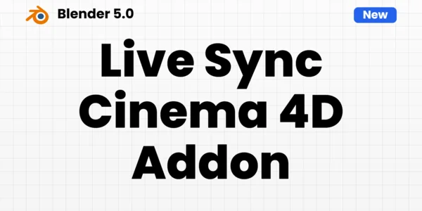
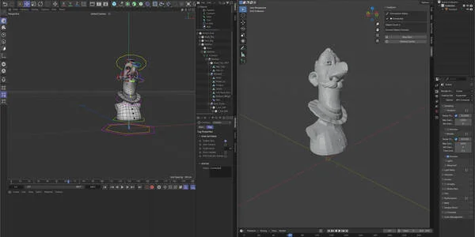
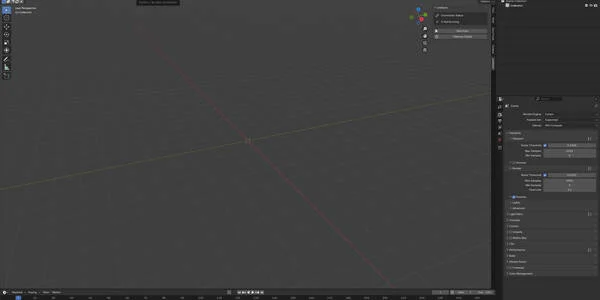
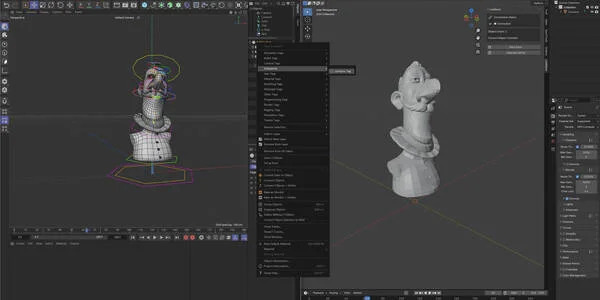
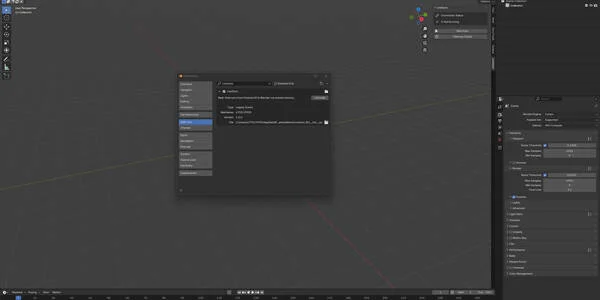
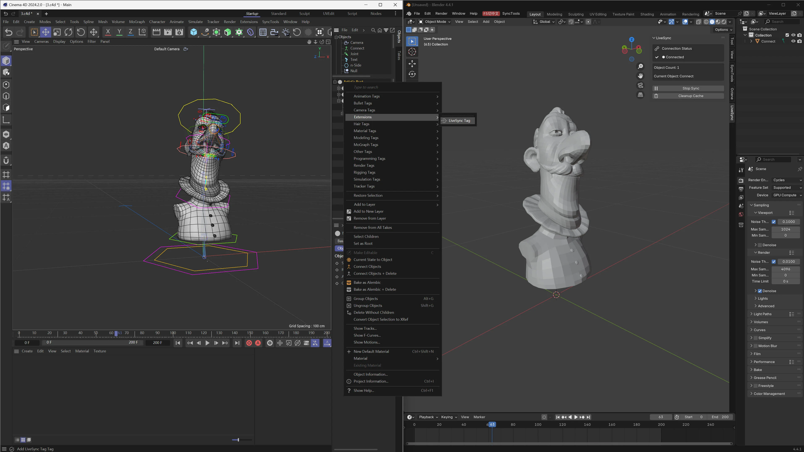
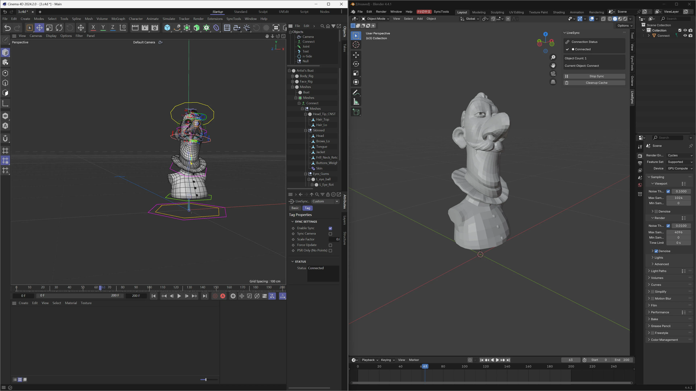
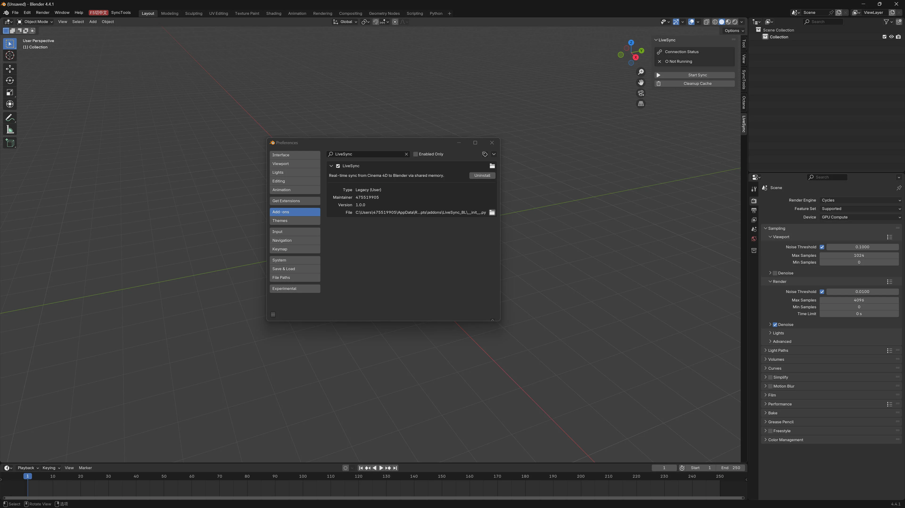

Blender Live Sync Cinema 4D
$20.00相册






产品信息
描述
Blender Live Sync for Cinema 4D — 插件概述
Blender Live Sync for Cinema 4D 是一个实时同步插件，旨在简化以下软件之间的工作流： Cinema 4D (C4D) and Blender。它实现近零延迟更新，让艺术家在 C4D 中建模、变形、雕刻、绑定和动画的同时，即时在 Blender 中看到结果——消除重复的导出和导入。
🚀 实时同步
在 Cinema 4D 中工作，实时在 Blender 中查看更新。 在 C4D 中对模型进行变形、雕刻和骨骼绑定，实时更新反映在 Blender 中，实现更快的迭代和更流畅的制作。

✅ 广泛功能支持
插件支持生产流程中常用的多种数据类型和对象：
模型数据
实时传输基本网格信息，包括：
顶点和拓扑
UV、法线等
变形器
支持所有影响几何变形的变形设备，包括：
变形器、场/域及相关系统
生成器
C4D 生成器生成的几何体实时更新，使程序化工作流完全支持同步。
Motion 图形s (MoGraph)
同步运动图形对象，如：
克隆器
矩阵
其他 MoGraph 元素
骨骼 / 绑定
骨骼变形的实时同步，实现高效的绑定和动画工作流。
雕刻 / 雕刻
通过雕刻（雕刻笔刷）修改的模型在 Blender 中即时更新，保持雕刻工作流的快速和响应。
相机同步
同步相机参数，包括：
位置和旋转
焦距和其他相机设置
时间轴同步
保持两个应用程序同步：
当前帧
起始帧和结束帧
帧率同步
⚡ 高性能



采用共享内存技术驱动，插件仅传输变化的数据——以几乎零延迟实现极快的性能。
🧭 可配置的轴映射
自定义从 C4D 到 Blender 的坐标系转换，支持：
轴映射调整
缩放
偏移控制
文档
Blender Live Sync for Cinema 4D

安装 & 设置up Guide
Blender Live Sync for Cinema 4D 是一个实时同步插件，连接 Cinema 4D (C4D) and Blender，实现网格、变形器、生成器、MoGraph 对象、骨骼、雕刻变更、相机和时间轴设置的近零延迟更新。
本文档说明如何在两端安装插件以及如何建立首次成功连接。
目录
系统要求
包内容
安装 Cinema 4D 插件
安装 Blender 插件
首次连接设置
验证同步
轴映射设置
故障排除
支持
1. 系统要求
支持的软件
Cinema 4D: R25 / 2023 / 2024 或更新版本（推荐）
Blender: 3.x / 4.x（推荐）
操作系统
Windows / macOS （取决于您的插件版本）
推荐设置
为获得最佳性能和最低延迟，请在同一台电脑上运行 Cinema 4D 和 Blender。
(某些版本可能支持网络同步，具体取决于您的版本。)
2. 包内容
您的下载包通常包含：
Cinema 4D 插件文件夹
Example:
BlenderLiveSync_C4D/
Blender 插件
Example:
BlenderLiveSync_Blender.ziporBlenderLiveSync.py
可选文档文件：
README.txt,Manual.pdf, etc.
⚠️ 注意：文件夹名称可能因插件版本而异。
3. 安装 Cinema 4D 插件 (C4D Side)
选项 A（推荐）：安装到 C4D 的 plugins 文件夹
关闭 Cinema 4D（如果正在运行）。
找到您的 Cinema 4D 安装目录：
Windows（示例）：C:\Program Files\Maxon Cinema 4D 2024\plugins\
macOS（示例）：应用/Maxon Cinema 4D 2024/plugins/
将插件文件夹复制到
plugins目录中。
Example:BlenderLiveSync_C4D/ → .../Cinema 4D/plugins/
启动 Cinema 4D。
验证插件出现在以下位置之一：
扩展 菜单
插件 菜单
专用插件面板 / 工具栏
选项 B：安装到用户插件文件夹（无需管理员权限）
如果您无法访问系统安装目录：
打开 Cinema 4D
前往：编辑 → 偏好设置
找到：插件
找到 用户插件路径
将插件文件夹复制到该目录
重启 Cinema 4D
4. 安装 Blender 插件 (Blender Side)
打开 Blender
前往：编辑 → 偏好设置 → 插件
点击 安装…
选择插件文件：
如果您收到的是
.zip, 请直接安装.zip（不要解压）如果您收到的是
.py，请选择.pyfile
安装后，搜索插件名称：
Blender Live Sync for Cinema 4D通过勾选复选框启用插件
启用后，插件界面通常出现在：
3D Viewport → Sidebar (press
N)或 Blender 界面中的插件标签页（取决于版本）
5. 首次连接设置
两个插件都安装完成后，按以下步骤连接。
步骤 1：在 Cinema 4D 中开始同步
打开您的 C4D 场景
Open the plugin panel from 扩展s / 插件s
点击以下选项之一（名称可能不同）：
开始
连接
启用 Sync
Live Sync On
Confirm the plugin status shows something similar to:
运行ning
Waiting for Blender
连接ed
Step 2: 开始 Sync in Blender
Open Blender
Open the plugin panel (usually in the N-panel)
Click:
连接
开始 Sync
Receive
If the plugin supports connection settings, confirm:
连接ion mode = Shared 内存
Status = 连接ed
6. 验证同步
After connecting, use the following tests to confirm everything works correctly.
6.1 网格 更新 Test
In Cinema 4D, create a cube (or any primitive)
移动, rotate, or scale it
The object should update in Blender immediately
6.2 顶部ology / UV / 正常 Test
In C4D, convert a primitive to editable mesh
修改 points / edges / polygons
Confirm Blender updates the mesh shape correctly
6.3 Deformer Test
添加 a deformer in C4D (Bend / Twist / etc.)
调整 deformer strength and settings
Blender should update in real time
6.4 Generator & MoGraph Test
创建 a generator or MoGraph object in C4D
更改 its parameters (clone count, spacing, etc.)
Blender should update the generated geometry
6.5 Bone Deformation Test
Bind bones to a mesh in C4D
移动/rotate bones
Blender should update deformation instantly
6.6 Camera Sync Test
Select a camera in C4D
调整:
位置 / rotation
Focal length
Blender camera should match the changes
6.7 时间轴同步 Test
In C4D, scrub the timeline or press play
Confirm Blender synchronizes:
当前帧
开始 frame / end frame
帧 rate (FPS)
7. 轴映射设置 (Coordinate Conversion)
Cinema 4D and Blender use different coordinate systems.
If you notice incorrect orientation (flipped axes, wrong rotation, scale mismatch), configure the axis mapping:
Open plugin settings (C4D side or Blender side depending on version)
查找 Axis 映射ping / Coordinate Conversion
调整:
Axis conversion (X/Y/Z mapping)
缩放
偏移
Tip: If your model appears rotated 90° or mirrored, axis mapping is usually the cause.
8. 故障排除
Issue: 插件 does not appear in Cinema 4D
Solutions:
Confirm the plugin folder is placed in the correct
pluginsdirectory制作 sure the folder is not nested incorrectly
(Example: avoidplugins/BlenderLiveSync/BlenderLiveSync/)重启 Cinema 4D
Try installing via the User 插件s 路径
Issue: 插件 does not appear in Blender
Solutions:
制作 sure it is enabled in 偏好设置 → 插件
Use the search bar and type Live Sync
Check the N-panel in the 3D Viewport
Issue: No connection / no updates
Solutions:
Ensure both plugins are running
重启 both Cinema 4D and Blender
Try re-clicking 连接 / 开始 Sync
Confirm the plugin is using Shared 内存 mode (if available)
Issue: Lag or slow performance
Solutions:
Reduce the number of synced objects
Avoid syncing extremely high-poly sculpt meshes during heavy edits
Use shared memory mode for best speed
Sync only changing data (recommended workflow)
Issue: Wrong scale or rotation in Blender
Solutions:
配置 Axis 映射ping
Apply scale/offset settings
验证 both scenes use consistent units
9. 支持
If you still have issues, please prepare the following information before contacting support:
Cinema 4D version
Blender version
Operating system
插件 version
A short description of the issue
Screenshots of plugin status panels (C4D + Blender)
产品文件
- LiveSync_n2.zip(43.3 KB)